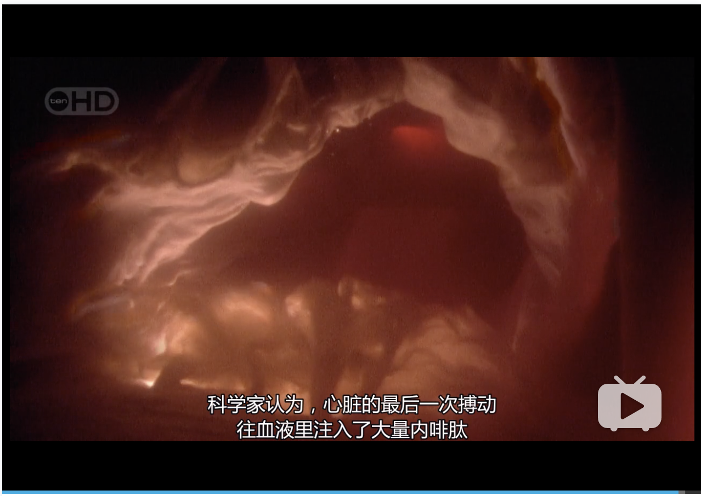

Inside The Living Body
人体内旅行
最近因为疫情的影响，呆在家的时间也增多了。
肆无忌惮地刷了好多剧。
今天聊一下人体内旅行这部。
因为开头就太硬核了，从体内到体表，从出生到死亡，全程高能。
想想每个人来到这个世界的第一秒，
心脏开始第一次的跳动，
肺开始苏醒，并接着开始了我们生命中最重要的第一次呼吸，
血液开始渗入空气中的氧气，由蓝色瞬间变为流动的红色
(原来红细胞在没有氧气的状态下是蓝色的)

一声啼哭，我们在地球上的旅程正式开始了。
那时我们的出厂配置都是最好最新鲜的，最好的皮肤，最好的听力系统，最少的自由基，真是很神奇。
而且伴随着细胞更新换代，我们的头骨两年更新完毕一次，
也可以说我们现在的脸和两年前其实是完全不一样的。
这就是为什么我们的样貌也会随着成长不断变化吧。
可惜伴随着旅程，衰老是一件令人难过并且不可逆的事情。
衰老并不是改变外表，长出皱纹，而是影响这我们体内每一个细胞的过程。
噪音对内耳毛细胞的不可逆损伤，紫外线和辐射对表皮的照射，
就连我们赖以生存的氧气，也在我们体内不断积累自由基使线粒体失去活力，并破坏着我们的细胞。
最终这些损伤和积累到达一定限度的时候，
细胞再也无法复制了，我们的身体再也不能把这些器官修好。
就是我们该离开这个世界的时候了。
死亡,和生存一样，都是不可思议的生命过程，是一个既定的程序。
死亡不是瞬间的，而是组织器官逐渐断开联系的过程。
心脏最后一次的馈赠，
是往我们的身体里注入了大量的内啡肽，所谓人体天然的止痛药，用于缓解我们对死亡的痛苦。

10秒内，我们的脑电活动急剧下降，
而37小时后我们最后一个脑细胞发出最后一个神经冲动。
从此体内再也没有神经电流的光芒，一切归于黑暗和寂静。
所有的旅行终有结束的一天，
What a wonderful trip it is!

通过这部片子，意外地获得了一些我以前对生命疑问的解答。
线粒体，神经递质，电流画面对我这个以前生物学得还不错的人来说，还是倍有亲切感的。
生育对女性的健康是有确确实实的损害的，所有的母亲为生命的延续都做了很大的牺牲，这真的很伟大也很不容易。
烟酒最好不要碰(摄入酒精后为了解读会导致体内缺水，记得补水💦)，
紫外线，肥胖这些因素是我们可以尽量避免的，
毕竟，说长不长说短不短的几十年，
体内数亿的细胞在不眠不休孜孜不倦地为你的身体工作,
我们理应对它们好点。(最近少运动多熬夜的我反省中)
最后感谢我体内所有的细胞们，其实我真觉得挺对不住你们的,
因为我好像都没有为你们做过什么。
生活还是要继续的，可能还需要你们和我一起努力个几十年，
今後ともよろしくお願いいたします〜